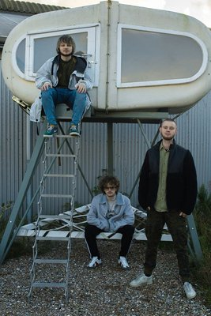

zaterdag
22:00-23:00
VOJAK
VOJAK is een Rotterdamse avant-groove band en staat voor een originele mengelmoes van stijlen; experimentele electronica, 70's funk, alternatieve hiphop, Drum&Bass en meer vermengen ze tot een geheel authentieke sound. Het woord Vojak is Slovaaks (afkomst van Toetsenist Tommy van Leuken) voor strijder.

zaterdag
22:30-23:45